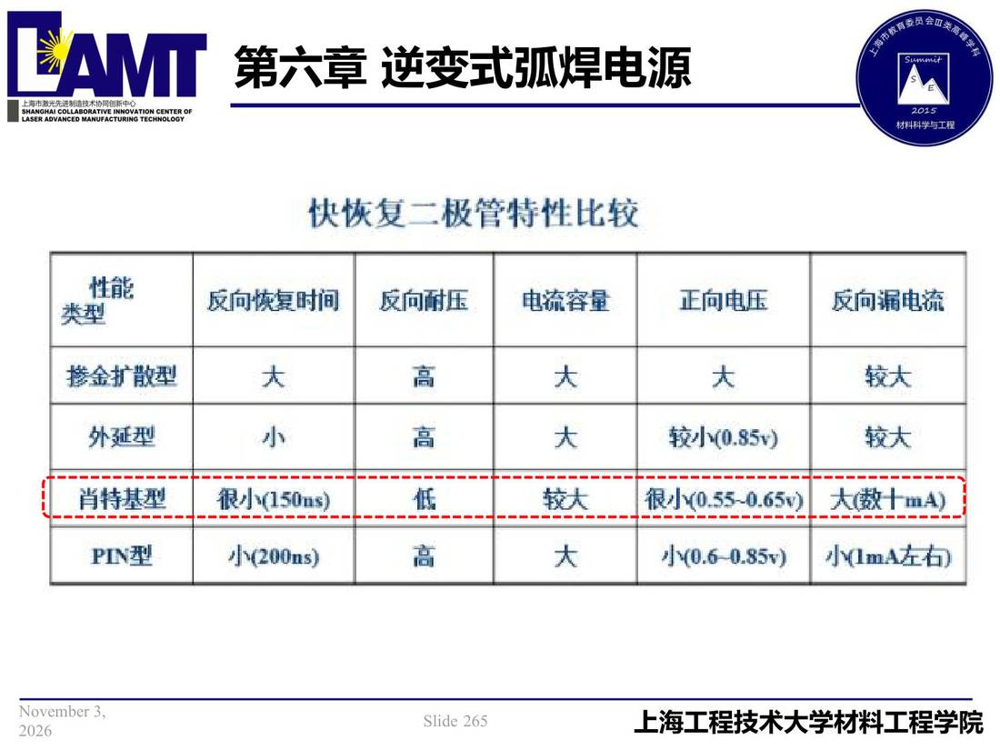

06 第6章 逆变式弧焊电源/p265 快恢复二极管特件比较
p265 快恢复二极管特件比较
📄 原文：📄 弧焊电源 课件（PDF 第 265 页）（幻灯片 265/273；PDF 第 265 页）
快恢复二极管特件比较

讲义原文
本页在课件中是纯图文版式（无文字层），内容以页图与下面的 OCR 文本为准。
页面文字（OCR 机读，可能有错字，以页图为准）
快恢复二极管特件比较 性能 类型 摻金扩散型 外延型 肖特基型 反向快复时间 很小（150ms） 反向耐压 电流容量 较大 正向电压 较小（0.85v） 很小（0.55-0.65y）